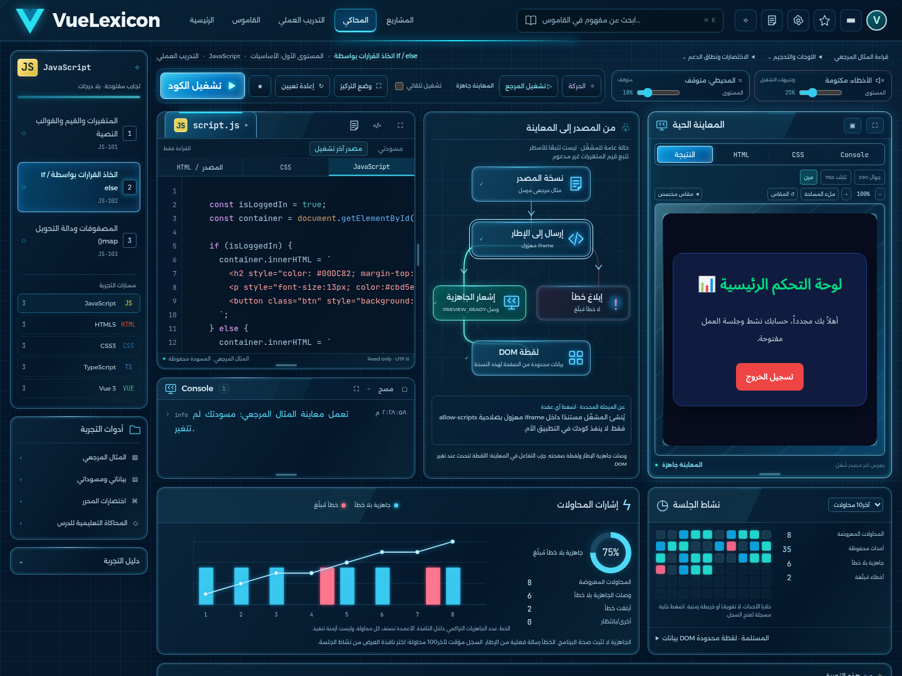
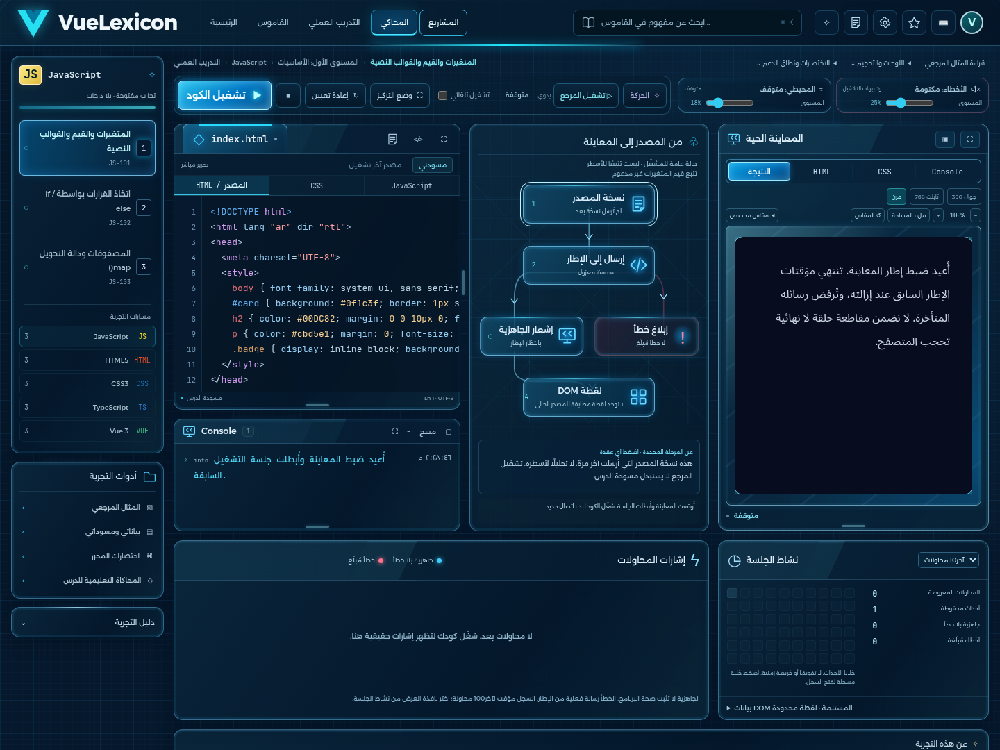

الكمبيوتر — عرض 1440 بكسل

الأرقام ناتجة عن جلسة تصوير معزولة: 8 محاولات تشغيل فعلية، 6 جاهزيات دون خطأ مُبلّغ و2 أخطاء مقصودة؛ النسبة 75%. ليست بيانات صاحب المشروع، ولا تقييمًا لصحة المنطق البرمجي. انظر دفتر التصوير.
التفاعل والحركة والصوت الفعلي
تنزيل الفيديو — يتضمن السحب والتكبير والمعاينة وConsole وخطأً مقصودًا والإيقاف وإعادة التعيين. ارفع صوت المشغل لسماع الصوت المحيطي وصوت الخطأ المعتمدين. لم تتغير وحدة الصوت.
التابلت — 768 بكسل
الجوال — 390 بكسل
لقطات التفاصيل
الحالة الفارغة قبل أي تشغيل

المقارنة مع المرجع الأحدث
| العنصر | التنفيذ والحدود |
|---|
| الكحلي الزجاجي والسماوي وشبكة Blueprint | نُفذت بطبقات CSS وSVG داخل التطبيق؛ لا صورة ثابتة لواجهة المحاكي. |
| المحرر وConsole والمخطط والمعاينة والرسوم السفلية | التوزيع نفسه على الكمبيوتر، مع تحجيم فعلي وتبديل عملي على الجوال. |
| المخطط الأزرق والأحمر | جاهزية وخطأ من إشارات التشغيل المتاحة. لا استنتاج if/else أو قيم متغيرات غير متتبعة. |
| النتيجة داخل المعاينة | يبقى كود المستخدم وتنسيقه الأصلي داخل iframe المعزول؛ لم ننسخ بطاقة المثال في الصورة إلى كل النتائج. |
| النسب والتقدم والأوقات | الأعداد من المحاولات الفعلية، والتقدم من الدروس الأصلية. لم تُنسخ أرقام المرجع أو أوقات تنفيذ غير مقاسة. |
الصورة الجديدة مرئية في المحادثة ولم تتوفر كملف محلي في مساحة العمل. لذلك لا تُرفق الصورة القديمة بدلًا منها، ولا يُدّعى تطابق بكسلي. التقرير يوضح القيود وحالات الاختبار والفشل الأولي وتصحيحاته.